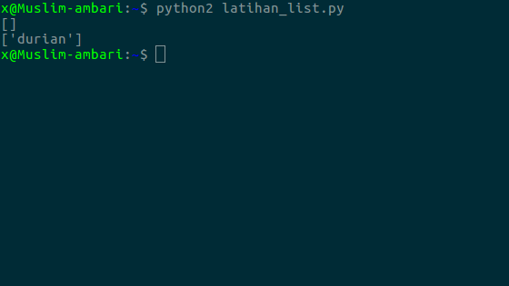
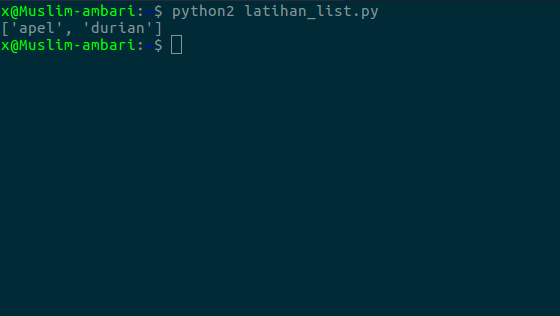
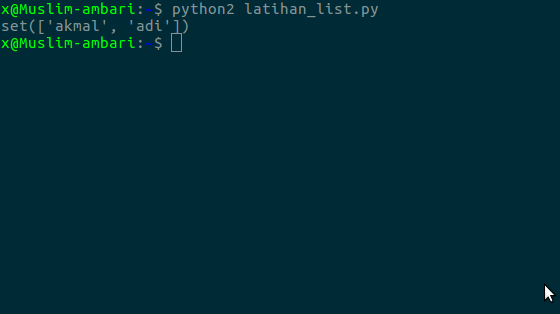

python list
kali ini kita akan belajar list pada python,
1. membuat list2. menampilkan data list3. menambahkan data kedalam list4. menghapus isi list5. menghapus data yang sama di list
1.membuat list
pembuatan type data list sama dengan membuat variabel biasabedanya, dalam membuat list kita tambahkan tanda kurung siku,
buah
data yang akan kita simpan harus di capit dengan tanda kutip, dan dipisahkan dengan tanda koma.
2. menampilkan data list
sebelumnya harus diketahui bahwa index pada list selalu dimulai dari nol (
buah
Hasilnya

3. menambahkan data kedalam list
untuk menambahkan data kedalam list kita bisa gunakan fungsi
Hasilnya

lihat, sebelum ditambahkan tidak ada data di list(kosong), karena kita belum menambahkan data ke list. tapi sesuah kita tambahkan menggunakan fungsi 4. menghapus isi list
dan untuk menghapus isi list kita bisa gunakan fungsi
Hasilnya

bisa dilihat bahwa data yang bernama jeruk tidak ada, karena sudah kita hapus menggunakan fungsi
5. menghapus data yang sama di list
bagaimana jika kamu sedang membuat program untuk mengumpulkan banyak data
sedangkan di tumpukan data tersebut banyak sekali data yang sama, maka kamu harus menghapusnya secara manual.
apakah boleh seperti itu?
mari kita coba, buat file baru dan ikuti kode berikut
teman = ["akmal" ,"adi" ,"adi" ]
print set (teman)
Hasilnya

data